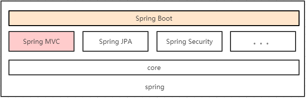
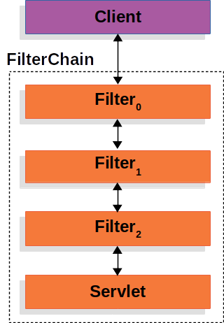

Java Spring Boot 入门
前置条件：WEB 基础（Socket，HTTP 整套规范），SQL 和数据库基础，Java 语言基础、前端基础（至少了解一种前端框架，本文以 React 为例）；
Chapter 0. Basic Concepts
0.1 Servlet, war & jar
在接触 Web 框架时，你肯定能碰到一个绕不开的词：Servlet。它是什么？
Servlet 本质上就是一种规范，在 Java 的实现中就是一个 Web 规范接口。
所以，为什么要有这个规范？让我们回到最初的起点。
假设你什么框架都不用，想要徒手写一个能提供服务的服务器，那需要做哪些工作？
其实原理比较简单，遵循当今互联网的 HTTP 协议发报文就行：
- 先编写基于多线程的 TCP 服务（Web 3.0 准备改用 UDP 了）；
- 然后在一个 TCP 连接中读取 HTTP 请求，发送 HTTP 响应即可；
但是其中还要考虑一些与网络协议相关、与业务逻辑无关的其他情况：
- 识别正确和错误的 HTTP 请求；
- 识别正确和错误的 HTTP 头；
- 复用 TCP 连接；
- 复用线程；
- IO 异常处理；
- …
说到这里头都大了🥹 这些 “基础工作” 需要耗费大量的时间，并且经过长期测试才能稳定运行。如果我们只需要输出一个简单的 HTML 页面，就不得不编写上千行底层代码，那就根本无法做到高效而可靠地开发！
人们为了简化这一过程，抽象出了一个中间层：Web Server。
这些共性的、与业务逻辑无关的东西，我们统统交给现成的轮子（web server）去做，我们只需要在 web server 上写自己的应用，与 web server 做沟通就行。
进一步地，人们为了统一 “应用程序与 Web Server” 的交互接口，进一步实现功能解耦（即如果换了另一个人写的 web server，上层的应用程序根本不需要变），在 Java 中就定义了一个 Web Server 的接口，称为 Servlet。
上层应用程序可以通过继承于这个接口创建一个适用于自己程序的、处理 Web Server 发来的信息的类，以便把信息传入自己的业务逻辑中。其关系如下图所示：
1 | ┌───────────┐ |
这里的 Web Server 又被称为 Servlet Container，它的作用就是，解析 client / browser 发起的 request，并组装出 HTTP Request、创建 HTTP Response，将二者交于内部自定义的 Servlet（My Servlet）处理和填充。
像 Tomcat、Jetty、GlassFish 就是一些常见的 Web Server。
现在还有一个问题没解决。如果由 Web Server 来帮助我们完成，那么我们写应用程序时，需要和 Web Server 一起编译打包吗？答案是不需要。
在 Java 中，我们需要将自己写的 Servlet 以及其他业务逻辑的程序打包成一个 *.war 的文件（和 *.jar 不一样，不能直接运行），然后必须由含有 Servlet API 的 Web Server 动态加载进去执行，所以 Web Server 又叫 Servlet Container。
那么具体自己如何编写 Servlet 呢？以 javax.Servlet 类为例：
1 | public interface Servlet { |
从原理上讲，Servlet 可以处理任何类型的请求，但绝大多数情况下 Servlet 只用来扩展基于 HTTP 协议的 Web Server。
0.2 Spring, Spring MVC, Spring Boot
除了 Servlet，我们还要弄清楚 Spring 框架以及其中的各种常用术语。Spring MVC、Spring、Spring Boot 有什么关系？
首先尝试理解一下 Spring 框架。
以下部分内容引用自 CSDN Blog - 狂野弘仁；
Spring，一般指代的是 Spring Framework，它是一个开源的应用程序框架，提供了一个简易的开发方式，通过这种开发方式，将避免那些可能致使代码变得繁杂混乱的大量的业务/工具对象（由框架来帮你管理这些对象，包括它的创建，销毁等）。
Spring Framework 最重要也是最核心的特性是依赖注入。所有的 Spring 模块的核心就是 DI（依赖注入）或者 IoC（控制反转）。依赖注入或控制反转是 Spring Framework 最大的特性，当我们正确使用这二者时，可以开发出一个高内聚低耦合的应用程序，而这一一个低耦合的应用程序可以轻松的对其实施单元测试。这就是 Spring Framework 解决的最核心的问题。
什么是控制反转？
是一种软件设计思想，也是 Spring 框架的核心概念之一。
假设类
A需要类B作为组成部分，那么在传统设计理念下，类A初始化时，需要顺便创建B的对象，并且要在B的全部生命周期内维护它。这样做法虽然正确，但是有几个缺点：
- 类型紧耦合。如果想要更换
B，那么需要找到类A中所有用到B的地方全部去改；- 全盘管理外部对象，加重编写负担，模糊业务逻辑，使维护难以进行。
于是，人们想出一种方法，将数据对象封装成一个 Java Bean，把这个 Bean 交给一个容器管理（被称为 IoC Container，在 Spring 中由框架代码帮忙完成），要用到它的时候写注解自动注入，提升了组件的重用性，实现组件解耦。
以 Spring 的两个注解为例：
@Component: 该注解将会告诉 Spring Framework，被此注解标注的类需要纳入到 Bean 管理器（IoC Container）中。@Autowired: 告诉 Spring Framework 需要找到一与其类型匹配的对象，并将其自动引入到所需要的类中。什么是依赖注入？
可以这么理解：它们是同一个概念的不同角度描述。通俗来说就是 IoC是设计思想，DI是实现方式。二者的终极作用是去除 Java 类之间的依赖关系，实现松耦合，以便于开发测试。例如对于这个类型设计：
2
3
4
5
6
7
8
9
10
11
12
13
14
15
16
private Weapon weapon;
// weapon 注入
Player(Weapon weapon){
this.weapon = weapon;
}
public void attack() {
weapon.attack();
}
public void setWeapon(Weapon weapon){
this.weapon = weapon;
}
}定义 Spring Bean 配置：
2
3
4
5
6
<construct-arg ref="weapon"/>
</bean>
<bean id="weapon" class="com.demo.Gun">
</bean>我们对于 Weapon 的实例构造并不在
Player内，而是放在配置文件中，依靠多态（Gun继承于Weapon）和反射（读配置、构造对象，外部设置类的行为）实现依赖注入，让两个业务类解耦合。或者说，在依赖解耦合方面，控制反转是设计思想，依赖注入是一个设计模式，配置文件只是形式，反射和多态是底层实施手段。
而 Spring Framework 的其他高级特性，例如：Spring AOP、Spring JDBC、Spring MVC、Spring ORM、Spring Test，它们都不是一个全新的功能。因为在不使用 Spring Framework 的情况下，我们依然能够使用 JDBC 连接数据库、依然能够对视图和数据模型进行控制、依然能够使用第三方的 ORM 框架。
Spring Framework 只是对这些功能中的逻辑采用上述思想进行解耦合，以及进一步封装。例如 Spring JDBC 与传统的 JDBC 相比，使用 JDBC Template 操作数据库，首先是代码量小了，其次是我们不需要再面对恐怖的 try-catch；
如果你还使用过 C++ 配合 MySQL 原生驱动的组合的话，就完全明白这句话的分量……
再比如 Spring Framework 的 MVC，提供了构建 Web 应用程序的全功能 MVC 模块，实现了 Web MVC 设计模式以及请求驱动类型的轻量级 Web 框架，即采用了 MVC 架构模式的思想，将 Web 层进行职责解耦。基于请求驱动指的是使用请求-响应模型，视图与数据模型分离：
- Dispatcher Servlet；
- ModelAndView；
- ViewResolver；
这个功能模块是人们利用 Spring 解耦的组件进行进一步整合而得出的。
而 Spring Boot 就像整合了常用配置的“懒人包”，实现多种自动配置：
如果Hibernate的依赖被放到了类路径上，Spring Boot会自动配置数据源；
如果Spring MVC的依赖被放到了类路径上，Spring Boot又会自动配置Dispatcher Servlet；
当Spring Boot检测到有新的依赖包添加到类路径上，Spring Boot会采用默认的配置对新的依赖包进行设置，如果我们想自己配置依赖包时，只需要手动覆盖默认的配置项即可；
Spring Boot 已经内置了多个 Web server，如 Undertow, jetty, tomcat，因此我们不需要再额外的配置服务器（比如前一节提到的打包为
war，然后部署），就可以完成应用程序的调试工作；
所以，严格意义上讲，Spring Boot 并不是某种框架，它只是为开发人员提供了一个更好的更方便的使用 Spring Framework 的解决方案（相当于人家把环境都自动化配好了）。

0.3 RESTful API
在开始前，还要了解一个概念，什么是 RESTful API（你们互联网事真多😅）。
在互联网并没有完全流行的初期，移动端也没有那么盛行，页面请求和并发量也不高，那时候人们对网络的接口的要求没那么高。只是写一些静态页面、偶尔用用一些动态页面（jsp，整个页面同时刷新）、然后按照 HTTP 等规范手动 DIY 发一发报文，就能满足绝大多数的使用需求。
但是随着互联网和移动设备的发展，人们对 Web 应用的使用需求也增加，传统的动态页面由于低效率而渐渐被 HTML + JavaScript (Ajax) 的前后端分离所取代，并且安卓、IOS、小程序等形式客户端层出不穷，客户端的种类出现多元化，而客户端和服务端就需要接口进行通信，但接口的规范性就又成了一个问题。
假设服务供应方 A 做了一套通信接口，另一个服务供应方 B 又搓了一套通信接口，那么我想同时用这两家服务，难不成还要应用开发者写两套访问逻辑？太不优雅了！
所以一套结构清晰、符合标准、易于理解、扩展方便让大部分人都能够理解接受的接口风格（或者说共同约定）就显得越来越重要。
2000 年的时候，有个人在他的博士论文中提出了一套软件架构的设计风格（不是标准，只是一组设计原则、共同约定），它主要用于客户端（或浏览器）和服务器交互类的软件。这个人就是 Roy Thomas Fielding。
基于这个风格设计的软件可以更简洁，更有层次，更易于实现缓存等机制。
这个设计风格也被他命名为 “表述性状态转移”（Representational State Transfer，REST）的架构风格。满足这个架构风格的接口设计就被称为 RESTful API。
那么这个风格的特征是什么？或者说它的 “共同约定” 是什么？
REST 架构的 6 个限制条件，又称为 RESTful 6 大原则：
客户端-服务端分离（解耦）；
无状态的（Stateless）：服务端不保存客户端状态，客户端保存状态信息每次请求携带状态信息；
可缓存性（Cacheability） ：服务端需回复是否可以缓存以让客户端甄别是否缓存提高效率;
统一接口（Uniform Interface）：通过一定原则设计接口降低耦合，简化系统架构，这是RESTful设计的基本出发点；
这组接口就是针对资源的操作，包括获取、创建、修改、删除。
恰好对应了 HTTP 协议提供的 GET、POST、PUT 和 DELETE 方法。
注意，REST 原则强烈不建议接口动作与资源访问标识符混合使用。
REST 认为，URI指向资源、以资源为基础，应该以名词标识，真正的动作应该从 HTTP 的请求动作上识别。
注 1：Universal Resource Identifier 统一资源标志符，用来标识抽象或物理资源的一个紧凑字符串。URI 包括 URL（Locator）和 URN（Navigator）；
注 2：一个资源可以是文本（通常以 JSON / HTML / XML 为载体）、二进制流等其他任何数据（一般从数据库中拿到的）；
分层系统（Layered System）：客户端对服务端的情况无感，无法直接知道连接的到终端还是中间设备，分层允许灵活地部署服务端项目；
- 按需代码（Code-On-Demand，可选）：允许我们灵活的发送一些看似特殊的代码给客户端例如 JavaScript 代码。
当然，RESTful API 也是有缺陷的，例如过于重视资源的作用，导致一些与资源关系不大的场合（例如聊天服务器、通信服务器）如果使用 RESTful Web Service 则反而加重了开发负担。
补充：RESTful API 设计规范
本部分摘自 知乎专栏；
如果想要自己设计一个 RESTful API（而不是使用各大框架中的办法），那么就要遵循以上的约定。具体来说：
URL 的 path 是需要认真考虑的，而 RESTful 对 path 的设计做了一些规范，通常一个 RESTful API 的 path 组成如下：
1 | /{version}/{resources}/{resource_id} |
version：API 版本号，有些版本号放置在头信息中也可以，通过控制版本号有利于应用迭代；resources：资源，RESTful API 推荐用小写英文单词的复数形式；resource_id：资源的id，访问或操作该资源；
当然，有时候可能资源级别较大，其下还可细分很多子资源也可以灵活设计 URL 的 path，例如：
1 | /{version}/{resources}/{resource_id}/{subresources}/{subresource_id} |
此外，有时可能增删改查无法满足业务要求，可以在 URL 末尾加上 action，例如
1 | /{version}/{resources}/{resource_id}/action |
其中 action 就是对资源的操作。
从大体样式了解 URL 路径组成之后，对于 RESTful API 的 URL 具体设计的规范如下：
- 不用大写字母，所有单词使用英文且小写；
- 连字符用中杠
"-"而不用下杠"_"； - 正确使用
"/"表示层级关系,URL的层级不要过深，并且越靠前的层级应该相对越稳定； - 结尾不要包含正斜杠分隔符
"/"； - URL中不出现动词，用请求方式表示动作；
- 资源表示用复数不要用单数；
- 不要使用文件扩展名；
此外，在 RESTful API 中，不同的HTTP请求方法有各自的含义，这里就展示 GET,POST,PUT,DELETE 几种请求 API 的设计与含义分析。针对不同操作，具体的含义如下：
1 | GET /collection： 从服务器查询资源的列表（数组） |
在非 RESTful 风格的 API 中，我们通常使用 GET 请求和 POST 请求完成增删改查以及其他操作，查询和删除一般使用 GET 方式请求，更新和插入一般使用 POST 请求。从请求方式上无法知道 API 具体是干嘛的，所有在 URL 上都会有操作的动词来表示 API 进行的动作，例如：query，add，update，delete 等等。
而 RESTful 风格的 API 则要求在 URL 上都以名词的方式出现，从几种请求方式上就可以看出想要进行的操作，这点与非 RESTful 风格的 API 形成鲜明对比。
在谈及 GET,POST,PUT,DELETE 的时候，就必须提一下接口的安全性和幂等性，其中安全性是指方法不会修改资源状态，即读的为安全的，写的操作为非安全的。而幂等性的意思是操作一次和操作多次的最终效果相同，客户端重复调用也只返回同一个结果。
| HTTP Method | 安全性 | 幂等性 | 解释 |
|---|---|---|---|
| GET | 安全 | 幂等 | 读操作（安全），查询多次结果一致 |
| POST | 非安全 | 非幂等 | 写操作（非安全），每次插入后与上次的结果不一样 |
| PUT | 非安全 | 幂等 | 写操作（非安全），插入相同数据多次结果一致 |
| DELETE | 非安全 | 幂等 | 写操作（非安全），删除相同数据多次结果一致 |
Tips. 调试数据请求时的类型选择
在使用类似 Postman 的工具发送请求时，可能会遇到不同种类可选的数据类型：
- form-data： 就是 form 表单中的 multipart/form-data，会将表单数据处理为一条信息，用特定标签符将一条条信息分割开，而这个文件类型通常用来上传二进制文件；
- x-www-form-urlencoded：就是application/x-www-form-urlencoded，是 form 表单默认的 encType，form 表单会将表单内的数据转换为键值对，这种格式不能上传文件；
- raw：可以上传任意格式的文本，可以上传 Text，JSON，XML 等，但目前大部分还是上传 JSON 格式数据。当后端需要接收 JSON 格式数据处理的时候，可以采用这种格式来测试。
这部分概念太多了，有些概念用到再说。
Chapter 1. Introduction to Spring Boot
1.1 First Spring Boot Project: A RESTful Web Service
在进入枯燥的概念和接口学习前，先用简单的方法构建一个简单的 RESTful Web Service 出来。
首先使用 gradle 构建管理工具创建一个项目，引入依赖：
1 | plugins { |
创建一个 Java 记录类型作为存放数据的结构：
1 | package priv.demo; |
创建一个资源控制器（相当于 Servlet 的处理逻辑）：
1 | package priv.demo; |
解释一下 @GetMapping(<path>)：保证所以筛选到 <path> 路径的 GET 请求被框架统一转发给被修饰的方法（这里是 greeting）。
其中，如果要处理 HTTP 尾缀参数，那么被 @GetMapping 修饰的方法强烈建议使用 @RequestParam(<value>, <defaultValue>) 修饰参数，这样能清楚地知道处理参数的情况。
例如上面的例子中，Servlet 能识别 GET /greeting 的请求，并且调用后端程序的 greeting 方法。返回的 record 对象会被框架自动解析并以 JSON 形式响应客户端（浏览器）。
由于方法中写了 @RequestParam，因此可以接受任何 /greeting?name=<...> 的后缀参数信息。
除了这里的
@GetMapping，还有@PostMapping（对应 POST 请求）等等。此外，
@RequestMapping(method=GET)等价于@GetMapping，相当于是其他各种 Mapping 的综合体。
另外，我们使用了 AtomicLong 类型，保证多线程情况下的安全性。counter 为当前运行时请求编号；
最后，还需要说明，这个类只有使用 @RestController 注解才能发挥作用。
它的作用是标识这个类作为一个 RESTful API 的资源接收和控制器，并且其中的每个方法都会返回 domain object，而不是一个 view（视图，传统 MVC Controller 都会返回视图）。这个注解等价于 @Controller 和 @ResponseBody（表示这里生成的是 HTTP 响应体）联合使用。
实际上，使用 @RestController 修饰的类中每个方法返回的 domain object 应该被转为 JSON（就是这里的 Greeting 对象应该转为 JSON）。但是因为有一个库 Jackson 2 的存在，Spring 会自动选择 MappingJackson2HttpMessageConverter 来将 record 实例转为 JSON。
最后，我们创建一个 main 函数来启动服务：
1 | package priv.demo; |
注意到，@SpringBootApplication 相当于以下 3 个注解的结合：
@Configuration：将被修饰的类标记为当前 Application 上下文的 Bean 的定义方；回忆 DI（依赖注入），这里相当于产生 Bean（之前的 Record 类型）的类型。
@EnableAutoConfiguration: 告诉 Spring Boot 根据当前 classpath 中的设置来开始注入 beans，以及其他属性设置。例如，如果spring-webmvc在 classpath 中，那么这个注解的含义就是将这个类标记为 Web Application，并且激活一些重要的行为，例如设置启动DispatcherSevlet；@ComponentScan：告诉 Sping 来查找其他的在priv/demo中的组件、设置和服务包，并且找到 Controller；
1.2 What is MVC?
MVC 是一种软件设计架构模式，大多数时候应用在 Web Application 中，主要分为 3 层：
- Control Layer：软件控制层。如果用在 Web App 上，这层的职责是解析从 Web Server 传来的对特定 URL 的请求，并转发给服务程序的相应逻辑块；
- Model Layer：软件模型层。实际上的职责是软件的数据表示（就是对关系型数据库中存储的数据以及表单进行面向对象的表述），能让你轻松地从数据库中取出数据后放入对象中，并且轻松地展示在 Web 页面上；
- View Layer：软件视图层。在传统的 Web 应用架构中，前端的程序主导了这个任务（比如 React、Anngular）。但是在 MVC 架构中，这部分位于后端，并且它的职责是收到从数据库传来的数据，并将其组织在 Web 页面上。
1.3 What is Dispatcher Servlet?
在 Spring MVC 中，有些东西不解释清楚就没法开始。比如一个 Spring MVC 中的概念 Dispatcher Servlet。
我们知道，Servlet 就是一种 Web Server 和 Web App 间的接口。在 Web App 软件层面只要按照 Servlet 接口实现一个 Servlet 就能与 Web Server 直接交互。
所谓的 Dispatcher Servlet 是一种编码模式（code pattern），也是 Servlet 的一种实现方式，在 MVC 架构中，作为 Control Layer 的一部分。
它在概念上主要完成了一件重要的事情：Request Handling & Mapping。
Dispatcher Servlet 实现了 Servlet 接口，能给接收从 Web Server 传来的 HTTP 请求。当一个请求到达 Spring MVC Application 时，它会首先到达 Control Layer 的 Dispatcher Servlet。
Dispatcher Servlet 会根据 Spring Framework 对于请求的配置（底层配置在 web.xml 中，但 Spring MVC 已经包装在了像 @ReuqestMapping 一类的注解中了），映射（map）到相应的 Controller 中（通常被包装为一个方法）进行处理。
此后，收到 Dispatcher Servlet 请求的 controller 中会对传入的数据进行详细处理，例如处理请求参数、访问数据库、准备响应体等等。
再然后，Controller 会将处理好的数据交给指定的 view 进行组装。这里的 View Layer 会生成像 JSP / Thymeleaf templates / JSON 之类的数据结构，并且发送。
Dispatcher Servlet 的这种职责实际上也是采用了一种编码模式，叫做 Front Controller。
1.4 What does Models actually do?
在 Spring MVC 中，显然一个 Model 作为软件的数据表示，是一个至关重要的部分。但同时也是 Spring MVC 包装较好的部分、较简单的部分。
一个 Model 通常可以是一个 “POJO”（Plain Old Java Class / Object）；
什么是 POJO？
Plain Old Java Object 特指那些 不用 extends / implements 其他外部框架的、不使用外部框架的 annotation 的 Java 类型。
简言之，你能不依赖框架写出的手写 Java 类型的实例都是 POJO。例如 Java Bean 就是典型的 POJO（允许 extends Java 原生接口，例如
Serializable）。使用 POJO 的优势是，POJO 能够更加贴近、关注业务逻辑，不依赖外部框架代码（与外部框架解耦），不需要考虑外部代码对它的隐式影响。
不过 Model 所包含的功能不止于用 POJO 保存信息，它还要完成一个重要的职责：将 POJO 与关系型数据库表建立关联（这个过程由 Spring JPA 模块完成）。
那么，接下来如何让 Spring Framework 知道这个 POJO 对应的类型是个 Model，并且如何将 POJO 由 JPA 映射为关系型数据库的表记录呢？
一般需要做 3 件事：
确定描述 Model 的 POJO 类型。这件事就在告诉 Spring，这个类是个表示数据的类（即 Model），等会 JPA 可以按照这个类型创建关系型数据库的表单；
这件事既可以由
XML配置来做，也可以由 Spring Boot 包装好的注解@Entity来做。但是如果加了注解，原来的类就不再是 POJO 类型。所以为了便捷性，需要在规范上作出一些取舍。
确定 Model 中的哪个数据域为 POJO 的唯一识别符。这个表示建议 JPA 在创建数据库表时，将这个数据类型作为表的 主键；
同样，这件事既可以由
XML配置来做，也可以由 Spring Boot 包装好的注解@Id来做。决定 Model 中的哪些数据域是需要框架 / 驱动来生成的，而不是用户（Requests）传入的。这个告诉 JPA，这个数据域外部不会给定，应该由程序根据情况生成。
举个例子，你可能在第二条中，想要为每个同类型的 POJO 维护一个全局唯一的 id，但这个 id 肯定不能由用户指定，通常是数据库的自增键来自动生成。
在 Spring Boot 中，提供了
@GeneratedValue注解，相当于告诉 JPA，这个数据域应该生成而不是传入得到（通常是通过数据库当前的信息判断出来）。默认行为是在 JPA 生成数据库表时，将被修饰的数据域生成成为 “auto increment”（这种数据域被称为 database indentity）；
举个例子：
1 | package priv.demo; |
1.5 N-Tier Architecture
前置知识：什么是 DTO？
在 MVC 架构中，有一种对象称数据转移对象（Data Transfer Object）。它的作用是在 Application 的不同层级 / 子系统间传输数据。
DTO 尤其常用在 N-Tiers 中使用，其好处是减少数据在各部分传输的量，使得程序信息能清晰地相互传输。具体的应用场景如下：
- 假设数据库中原本抽象出的对象有很多属性，但是我在某些层级间传输时，只需要用到一部分。那么就没有必要把对象整体传来传去：我们可以定义一个 DTO 类型，属性是原类型的子集，使得功能清晰、传参无负担；
- 假设有个方法需要传入 4 个以上参数，那么写方法签名、手动传参就不现实。可以定义一个 DTO 类型来向其传参，语义更清晰；
所以，DTO 就是一种普通的类型，提取了某个类型的一些属性。
例如，上一节定义的
PostInfo中，有一些数据现在不需要在 App 中传输，那么可以这么定义：
2
3
4
5
6
7
8
9
10
11
import lombok.Builder;
import lombok.Data;
public class PostDto {
private Long postId;
private String title;
}
在软件工程中有个非常有趣的事实是，90% 的时候都无需使用软件工程的设计原理（software engineering design patterns），但是应用在底层的架构设计是恰恰又需要用到。
有一种软件设计架构叫 N-Tier（或者说 N-Tier Repository Pattern，Multi-Tier Architecture），也是接下来我们想要实践的架构。它是一种 C/S 架构设计模式，最广泛的使用方法是将其分为 3 个部分：
Data Tier（Repository）：以 Web 开发为例，通常在 Java 后端服务中，此层是管理数据库的部分（在 Java 中通常封装为一个类型）。它通常具有 CRUD 四种方法，并且充当了在数据库表结果 和 对象之间转换的桥梁；
在 Spring JPA 中提供了一个接口
JpaRepository<EntityType, EntityIdType>轻松定义 custom query method（这样我们可通过方法名判断出对应的 SQL 语句）。例如：1
2
3
4
5
6
7
8
9import java.util.Optional;
import priv.demo.models.PostInfo;
import org.springframework.data.jpa.repository.JpaRepository;
public interface PostRepository extends JpaRepository<PostInfo, Long> {
Optional<PostInfo> findByPostId(Long postId);
List<PostInfo> findByTitle(String title);
}这里，
PostRepository又称 DAO（Data Access Object）类型。DAO 和 DTO 一样，也是一种编码模式（code pattern），它的作用是使用一组 API 将 application tier / bussiness logic 与 persistence layer 隔离开，达到模块解耦的作用。Application Tier（Bussiness Logic）：以 Web 开发为例，通常在 Java 后端服务中，此层是通常是 Spring 框架中处理数据的业务逻辑部分；
在使用 Spring MVC 时，除了我们直接写 Controllers 外，还建议抽象出一层 “Service”（服务层），这样可以把处理特定的数据库操作与业务逻辑解耦（即可以表示处理特定业务逻辑所需的操作），这样项目功能改变时就不用担心大幅度改代码，只需要到实现功能的 service 中改动就行，不会有 ”这块代码是干什么“ 的担忧。
例如：
1
2
3
4
5
6
7
8
9
10
11
12package priv.demo.services;
import priv.demo.dto.PostDto;
import java.util.List;
import java.util.Optional;
public interface PostService {
/* Use predefined DTO in services */
List<PostDto> findAllPosts();
Optional<PostDto> findPostsById(Long id);
}这样，我们再实现这个接口，注意因为服务抽象肯定需要 repository 的数据库操作，因此需要与
JpaRepository组合。这个时候就用到了 Spring 的依赖注入的特性，让模块解耦：1
2
3
4
5
6
7
8
9
10
11
12
13
14
15
16
17
18
19
20
21
22
23
24
25
26
27
28
29
30
31
32
33
34
35
36
37
38
39
40
41
42
43
44
45
46
47
48
49
50package priv.demo.services.impl;
import priv.demo.dto.PostDto;
import priv.demo.models.Post;
import priv.demo.repositories.PostRepository;
import priv.demo.services.PostService;
import org.springframework.beans.factory.annotation.Autowired;
import java.util.List;
import java.util.Optional;
import java.util.stream.Collectors;
/* provide Spring with PostSerivce Bean */
/* (可以在写 Controller 时再回来添加) */
public class PostServiceImpl implements PostService {
/* Use Jpa Repository to achieve goals */
PostRepository postRepository;
/* Use Spring Dependency Injection: inject repo to de-couple dependencies. */
/* Also, we need to provide repository from other area.
* Here we provide Spring with repo in */
public PostServiceImpl(PostRepository repository) {
this.postRepository = repository;
}
public List<PostDto> findAllBooks() {
List<PostInfo> posts = postRepository.findAll();
return posts.stream().map((post -> mapToPostDto(post))).collect(Collectors.toList());
}
public Optional<PostDto> findPostsById(Long id) {
Optional<Post> src = postRepository.findByPostId(id);
return (src.map(PostServiceImpl::mapToPostDto));
}
/** @implNote Private self-defined mapper.
* Covert model (database representation) to DTO (app representation).
*/
private static PostDto mapToPostDto(PostInfo post) {
PostDto postDto = postDto.builder()
.postId(post.getPostId())
.title(post.getTitle())
.build();
return postDto;
}
}注意，以上从
PostInfo（数据库表示，即 model）向PostDto（应用程序传输表示，即 DTO）转换时，需要自定义mapToPostDto的方法。此外，在数组元素处理时，我们还使用了 Java 中类似 JavaScript 的处理方法
map，对数组每个元素的处理方法就变简单了：1
2List<T>.stream().map(<mapFunc>); /* 返回映射后的 Stream 对象 */
Stream.collect(Collectors.toList()); /* 将产生的 Stream 对象转换回 List<T> */再聊聊 Controllers 的部分。后面的数据布置都已清晰，剩下来还要布置 Controller 处理 Web Server 发来的请求。
除了在在 1.1 中见到的
@RestController可以创建普通的 REST Controller 以外，还有普通的 Controller@Controller（少了将 Controller 方法组织成资源返回值的方法）；此外，
@RequestMapping()可以使用、@GetMapping/@PostMapping/@DeleteMapping/...注解也可以使用。Presentation Tier（Frontend）：以 Web 开发为例，通常在前端服务中，此层就是渲染 Web Page 页面的部分，可以由 React 等框架解决。
1.6 CRUD: Read Data
以上的所有知识已经足够我们将前端、后端连接起来。当然，后端如果要处理数据，还得把接下来几节学完。
现在让我们一起巩固所学，将前端和后端连接起来，先了解 “前端读取后端数据” 的效果如何达成。
首先，我们由上面的示例，已经能利用 JPA 从数据库中获取数据，并且呈现 JSON 结果了。因此我们只需要修改事先写好的前端，加入 fetch API，读取从后端传来的数据，再呈现在页面上即可。只要你完全了解了上面的理论，那么 read data 就是简单地在前端加上 fetch 获取资源，仅此而已。
值得注意的是，如果你做的项目也是前后端分离的（服务在不同端口上），那么 CORS 将会是一大问题。请自行查阅资料解决，笔者贴上自己的解决方案（Spring Boot）：
1 | package priv.demo; |
1.7 Validation in Backend
在后端的 DTO 类型中，往往可以添加许多注解来代替我们完成繁琐且常见的数据校验操作，例如：
@NotNull, @NotBlank, @NotEmpty, @Email, @Min, @Max, @Size, @Pattern, @Phone, @Past；
以上是库 spring-boot-starter-validation 的校验注解，需要自行安装。但由于它们注解在类的属性上，所以只有当你在 Controller 中获取表单参数时加入 @Valid，并配合 BindingResult（请添加第二参数）才会使这些注解生效。
1.8 CRUD: Create Data / Update Data
用户可能会通过表单向前端提交数据，这个过程通常会造成数据库的某些信息的修改。因此，我们有必要了解一下从前端传入数据，到后端修改数据的过程。
本节先对 “CRUD” 中的 Create 进行介绍，介绍在以上的 N-Tiers 架构设计中，Create 动作是如何完成的。
通常情况下，用户会在前端的 <form> > <input> 中填写数据，再 submit，前端会使用 fetch API 向后端发送表单信息。
对于 Create Data 而言，常常不是幂等的，因此使用 PostMapping，而 Update Data 而言大多数情况下是幂等的，因此使用 PutMapping；
在 JPA 中，对于简单的数据表而言，一条 repository.save(Entity) 即可完成创建或者更新的操作。
1.9 CRUD: Delete Data
对于 JPA 的简单表而言，一条 repository.delete(Entity) 即可完成任务。
1.10 JPQL: Search Data
除了前面的对于数据库的操作过于简单，我们无需写 SQL 语句以外，在用户的搜索场景中，由于搜索条件的复杂性，导致 Spring JPA 生成的 SQL 语句通常有性能问题。
所以自己写 SQL 语句查询往往是个好选择，开发者还可以根据自己写的 SQL 语句进行自行优化。
值得注意的是，在模糊搜索中 CONTAINS 和 LIKE 关键字的性能由数据库的类型决定，谨慎使用。
此外，有两种索引方式：name index、normal index。前者表示在代码中使用参数名嵌入 SQL 索引，后者表示使用类似 ?1 指定参数位来嵌入 SQL 索引。
例如，查找 SQL：
1 | SELECT post FROM posts WHERE post.title LIKE "%hello%" |
那么在 Spring JPA 中，提供了 @Query 方法可以在 JpaRepository 中使用，语法如下（以 name index 为例）：
1 | public interface PostRepository extends JpaRepository<PostInfo, Long> { |
注意到：
- 在内嵌 SQL 语句中，name index 前使用
:来标识； - 由于插入了变量，因此字符串需要拼接而不是直接使用；
1.11 One-To-Many Spring Data
关系型数据库中，有一种关系是一对多的数据关系。例如，一个用户可以对应持有多个订单。
这种关系在 Spring JPA 中以 @OneToMany 来表示。值得注意的是，这种关系是有关联的，通常要求父数据（One）被删除时，与该父数据关联的子数据（Many）需要一并全部删除，这种删除关系被称为 Cascade（级联），更详细的信息请参见数据库教程。
此外，如果是一对多的关系，在关系型数据库中通常还要联接表的列，以便联接查询。在 Spring JPA 中还提供了 @JoinColumn 注解，可以注解到要存放关联列的表的列 field 中（通常位于 “Many” 子数据表中）。
Chapter 2. Spring Security
2.1 Spring Security Overview (Servlet App)
强烈建议至少阅读 官方文档的 架构总览 章节，以获得对于 Spring Security 在 Servlet 应用中的宏观上的认识。
总结下来，Spring Security 在 Servlet 应用上的架构有如下几个重要的点：
以过滤器（filter）为核心。Spring Security 内置很多层 Filter：


Spring Security包含了众多的过滤器，这些过滤器形成了一条链，所有请求都必须通过这些过滤器后才能成功访问到资源。
UsernamePasswordAuthenticationFilter过滤器用于处理基于表单方式的登录认证；BasicAuthenticationFilter用于处理基于HTTP Basic方式的登录验证，后面还可能包含一系列别的过滤器（可以通过相应配置开启）；FilterSecurityInterceptor用于判断当前请求身份认证是否成功，是否有相应的权限，当身份认证失败或者权限不足的时候便会抛出相应的异常；ExceptionTranslationFilter能够捕获来自 FilterChain 所有的异常，并进行处理。但是它只会处理两类异常：AuthenticationException和AccessDeniedException，其它的异常它会继续抛出。
另外，可以打印出内部的默认部署的 filters 情况：
1
2
3
4
5
6
7
8
9
10
11
12
13
14
15org.springframework.security.web.session.DisableEncodeUrlFilter@404db674,
org.springframework.security.web.context.request.async.WebAsyncManagerIntegrationFilter@50f097b5,
org.springframework.security.web.context.SecurityContextHolderFilter@6fc6deb7,
org.springframework.security.web.header.HeaderWriterFilter@6f76c2cc,
org.springframework.security.web.csrf.CsrfFilter@c29fe36,
org.springframework.security.web.authentication.logout.LogoutFilter@ef60710,
org.springframework.security.web.authentication.UsernamePasswordAuthenticationFilter@7c2dfa2,
org.springframework.security.web.authentication.ui.DefaultLoginPageGeneratingFilter@4397a639,
org.springframework.security.web.authentication.ui.DefaultLogoutPageGeneratingFilter@7add838c,
org.springframework.security.web.authentication.www.BasicAuthenticationFilter@5cc9d3d0,
org.springframework.security.web.savedrequest.RequestCacheAwareFilter@7da39774,
org.springframework.security.web.servletapi.SecurityContextHolderAwareRequestFilter@32b0876c,
org.springframework.security.web.authentication.AnonymousAuthenticationFilter@3662bdff,
org.springframework.security.web.access.ExceptionTranslationFilter@77681ce4,
org.springframework.security.web.access.intercept.AuthorizationFilter@169268a7]
Spring Security 认证、授权的大致原理就是，借助这些 filters 判断这个请求是否有效，无效则抛出异常拒绝访问；
对 Spring Security 的设置，可以说就是对这些 filters 的配置、自定义；
- 配置：可以禁用、启用其中的 filters，为其中的 filters 设置参数等；
- 自定义：基于 Spring Security 提供的接口类，自定义 filters；
实际上，Spring Security 相当灵活，能够胜任：认证（像登录工作）、授权（像当前登录用户是否有权限）、外部授权服务器的认证和授权（像 OAuth2 协议）等任务。
其中，使用用户名-密码的方式认证、授权是最简单的一种，本章不作详细介绍。
最后，如果你发现自己写了一个配置，测试时却怎么都连不上，可以在 application.properties 内打开测试日志，帮助 debug：
1 | logging.level.org.springframework.security=TRACE |
2.2 Spring Security: OAuth2.0
2.2.1 OAuth2.0 Overview
Spring Security 除了普通的自定义用户名-密码验证，还支持 OAuth2.0 外部的授权服务器验证。
在了解 Spring Security 如何操作前，先了解 OAuth2.0 的协议是什么。
查看 RFC 6749 标准，其提供了抽象的协议流程：
1 | +--------+ +---------------+ |
简单来说，OAuth2.0 协议的过程如下：
1 | (A) 用户（就是 resource owner）访问客户端，客户端将用户导向认证服务器。 |
这就是 OAuth2.0 协议最规范、最完整、最常用、最安全的使用方法：授权码模式。RFC 6749 标准还规定了其他 3 种获取令牌（token）的模式：
- 简化模式；
- 密码模式；
- 客户端模式；
这些方法的安全性和规范性依次递减。
此外，我们从上图可知，一个后端程序想要使用 OAuth2.0，我们至少需要搭建：
- 一个 OAuth2.0 客户端（用于处理用户、授权服务器、资源服务器之间的交互）；
- 一个授权服务器（用户的认证信息存放位置）；
- 一个资源服务器（用户的资源存放位置）；
如果你使用第三方的 OAuth2.0 认证服务，就是说，使用第三方的认证服务来获取这个用户的有限的身份信息，那么只需要开发自己的客户端（client）即可，授权服务器（Authorization Server）和资源服务器（Resource Server）都是由第三方提供的。
举个例子，Github 第三方授权见过吧？很多网站都支持 QQ / 微信第三方登录吧？它们的底层都可以使用 OAuth2.0 来完成。
使用 OAuth2.0 可以验证当前的用户的身份，只不过是：在不需要知道用户的密钥的前提下，将用户的认证、授权委托给第三方（授权服务器）来完成，客户端（client）只要询问第三方，这个用户合不合法、用户的基本信息是什么（有限的信息，给多少取决于第三方授权服务器，以及用户在弹出的授权框里自己指定），就能证明这个用户的身份了。
本章也不说 OAuth2.0 授权服务器、资源服务器的搭建，只说 OAuth2.0 客户端的搭建。
如果使用的是第三方授权服务器、资源服务器，一般第三方平台会给你接口说明（客户端怎么访问授权服务器和资源服务器），并要求你出示自己的身份，注册一对 client_id、client_key；
为什么需要你注册一个 client_id/client_key 呢？这是为了保护 App 使用者（最终用户）的合法权益，确保客户端是可信的，不是什么伪造的中间人都可以访问授权服务器、读取用户信息的。
有了这对 client_id、client_key，就可以认证应用开发者和客户端的身份，在与第三方授权服务器通信时携带，就可以确保客户端是合法的。
2.2.2 OAuth2.0 Client in Spring Security
那么 Spring Security 是怎么支持 OAuth2.0 的呢？我们不妨先了解一下 Spring Security 的历史：
大约十年前，Spring 引入了一个社区驱动的开源项目 Spring Security OAuth， 并将其纳入 Spring 项目组合中。到今天为止，这个项目己经发展成为一个成熟的项目，可以支持大部分 OAuth 规范，包括资源服务器、 客户端和授权服务器等。
然而早期的项目存在一些问题，例如：
- OAuth 是在早期完成的，开发者无法预料未来的变化以及这些代码到底要被怎么使用， 这导致很多 Spring 项目提供了自己的 OAuth 支持，也就带来了 OAuth 支持的碎片化。
- 最早的OAuth项目同时支特 OAuth1.0 和 OAuth2.0，而现在 OAuth1.0 早已经不再使用， 可以放弃了。
- 现在我们有更多的库可以选择，可以在这些库的基础上去开发，以便更好地支持JWT等新技术。
基于以上这些原因，官方决定重写 Spring Security OAuth，以便更好地协调 Spring 和 OAuth，并简化代码库，使 Spring 的 OAuth 支持更加灵活。然而，在重写的过程中，发生了不少波折。
2018年1月30日，Spring 官方发了一个通知，表示要逐渐停止现有的 OAuth2支持，然后在 Spring Security 5中构建下一代 OAuth2.0 支持。这么做的原因是因为当时 OAuth2 的落地方案比较混乱，在 Spring Security OAuth、 Spring Cloud Security、Spring Boot 1.5.x 以及当时最新的Spring Security 5.x 中都提供了对 OAuth2 的实现。以至于当开发者需要使用 OAuth2 时，不得不问，到底选哪一个依赖合适呢？
所以 Spring 官方决定有必要将 OAuth2.0 的支持统一到一个项目中，以便为用户提供明确的选择，并避免任何潜在的混乱，同时 OAuth2.0 的开发文档也要重新编写，以方便开发人员学习。所有的决定将在 Spring Security 5 中开始，构建下一代 OAuth2.0 的支持。从那个时候起，Spring Security OAuth 项目就正式处于维护模式。官方将提供至少一年的错识/安全修复程序，并且会考虑添加次要功能，但不会添加主要功能。同时将 Spring Security OAuth 中的所有功能重构到 Spring Security 5.x 中。
到了2019年11月14日，Spring 官方又发布一个通知，这次的通知首先表示 Spring Security OAuth 在迁往 Spring Security 5.x 的过程非常顺利，大部分迁程工作已经完成了，剩下的将在 5.3 版本中完成迁移，在迁移的过程中还添加了许多新功能。包括对 OpenID Connect1.0 的支持。同时还宣布将不再支持授权服务器，不支持的原因有两个：
- 在2019年，已经有大量的商业和开源授权服务器可用；
- 授权服务器是使用一个库来构建产品，而 Spring Security 作为框架，并不适合做这件事情。
一石激起千层浪，许多开发者表示对此难以接受。这件事也在Spring 社区引发了激烈的讨论，好在 Spring 官方愿意倾听来自社区的声音。
到了2020年4月15日，Spring 官方宣布启动 Spring Authorization server 项目。这是一个由 Spring Security 团队领导的社区驱动的项目，致力于向 Spring 社区提供 Authorization Server支持，也就是说，Spring 又重新支持授权服务器了。
于是在 2020年8月21日，Spring Authorization Server 0.0.1 正式发布。
当前的 Spring Security 对于 OAuth2.0 的支持主要分为 2 个部分：
- OAuth2.0 Client（内置提供了强大的 OAuth2.0 登录功能）；
- OAuth2.0 Resources Server；
授权服务器的部分已经从 Spring Security 项目中独立出去了（Spring Authorization Server）。
这里就详细讨论 OAuth2.0 客户端的设计和使用。在 Gradle 中这么导入：
1 | implementation 'org.springframework.boot:spring-boot-starter-oauth2-client' |
Spring Security OAuth2.0 Client 支持：
- 认证：JWT Bearer 令牌的处理；
- 授权：授权码的保存、刷新令牌的操作、客户端认证信息的操作、用户认证信息的保存……
 wechat
wechat alipay
alipay